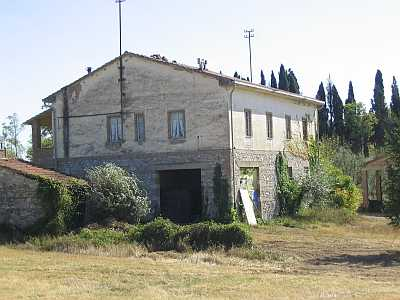
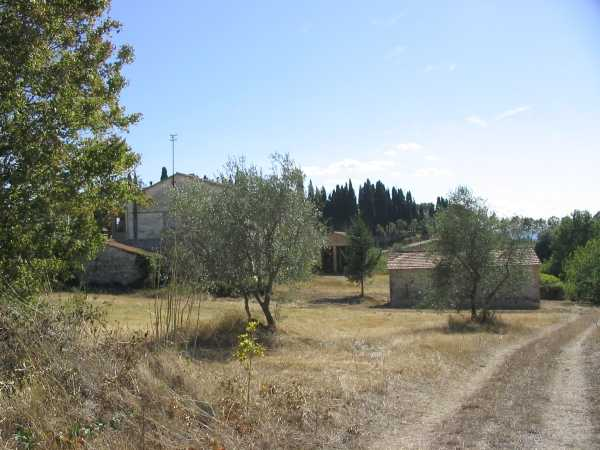

L’ultimo arrivato nell’elenco dei poderi della parrocchia di Quercegrossa è il Podernuovo detto anche parlando Casa nova, della fattoria del Castellare, costruito ex novo dal proprietario Bindi nell’anno 1955/56 perché l’antica abitazione colonica del Castellare, quella dei Masiero, stava cadendo a pezzi e non era più in grado di alloggiare nessuno. Il dottor Emilio Bindi decide quindi di costruire una nuova abitazione per il mezzadro che coltiverà le terre intorno al Castellare e individua il terreno lungo la SS. 222 nei campi del colono Losi a pochi metri dall’Arginanino, verso il Castellare. Iniziano i lavori, e nel frattempo cerca una famiglia, una buona famiglia di contadini che dovrà abitare la nuova casa. Ce n’è una a Fagnano che dal 1940 coltiva un podere della fattoria, appena sufficiente per campare e quindi sta cercando di cambiare: sono i Pagliantini, otto persone in tutto con quattro uomini. I comuni interessi corrispondono e l’accordo è presto fatto. I Pagliantini saranno la famiglia che inaugurerà l’abitazione di fresca costruzione nel 1956 e sarà anche l’unica della sua breve storia di podere a mezzadria.

L’edificio a pianta rettangolare su due piani, uno in pietra e l’altro scialbato, è
"trovato bello e spazioso" con tutti i servizi indispensabili e una comoda scala esterna. C’è anche l’acqua, che portata con tubature dalla Val di Lama serve alla stalla. I Pagliantini provvederanno essi stessi a prolungarla in cucina perché il Sor Emilio non vuol fare differenze con gli altri contadini che usufruiscono del medesimo servizio. A destra dell’abitazione fornita di stalla, magazzino, stanza del segato c’è, staccato, il forno a legna costruito alla maniera antica. Una costruzione, in definitiva, razionale, funzionale e moderna che contrastava con gli antichi e cadenti poderi vicini, ma dei quali non aveva il sapore e il colore. Le terre assegnate consistevano in quattordici ettari per lo più lavorativi, con viti e olivi compresa la piccola parte di terra tolta all’Arginanino, compensato con un pezzo di terra lungo il Bozzone. Buona di conseguenza la produzione nei tre prodotti fondamentali con 60 barili di vino, 100 /120 ql. di grano e 12 ql. di olio più o meno, anche se il podere nella lavorazione
"è faticoso perché piaggioso". Tribbiavano con i Mori. Nella stalla un paio di bovi, due paia di vacche e vitelli, fino a dieci bestie. Le scrofe fino a due, pascolate nel campo e nel bosco. Segatura vecchia maniera poi con la legatrice dei Mori. Un cipresso oggi svettante vicino all’abitazione venne piantato alla nascita di Maurizio.

La parte esposta a nord del Podernuovo visto dall'Arginanino con le strutture agricole di servizio
Capitolo successivo Poggiagrilli
Inizio pagina
Vai all'Indice dei Capitoli